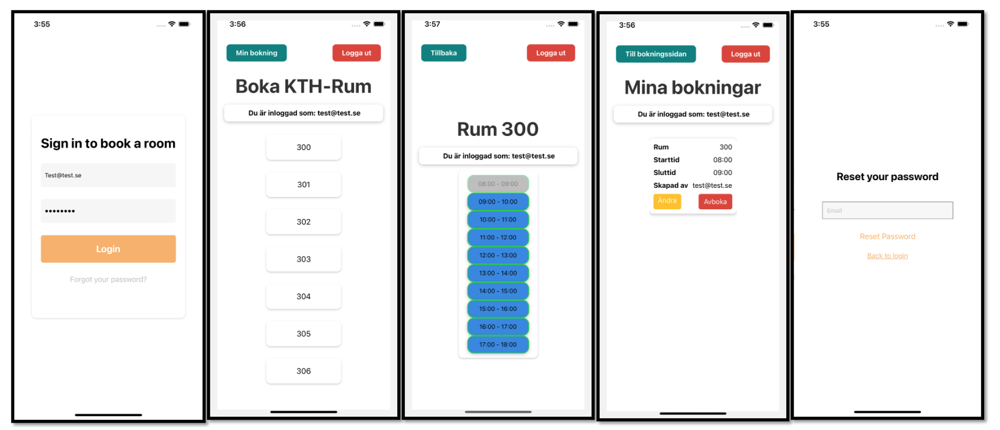

BOKA-KTH-Applications
Project Overview
Developed a user-friendly booking website, BOKA-KTH, catering specifically to students for reserving study rooms. The platform was designed to streamline the room reservation process at KTH, enhancing overall accessibility and convenience.
Technical Details
The project utilized React for the frontend, with CSS and HTML for styling and structure. Firebase served as a NoSQL database backend, providing robust data management. Version control was managed through GitHub. The development process involved tools like Visual Studio and IntelliJ IDEA.
Project Results
Successfully deployed the BOKA-KTH website, achieving a significant improvement in the ease of room booking for students. The platform was well-received for its intuitive interface and efficient booking process, demonstrating effective use of the chosen technologies.
Project Link
Visit the project here in the GitHub: Project Website
Back to Portfolio